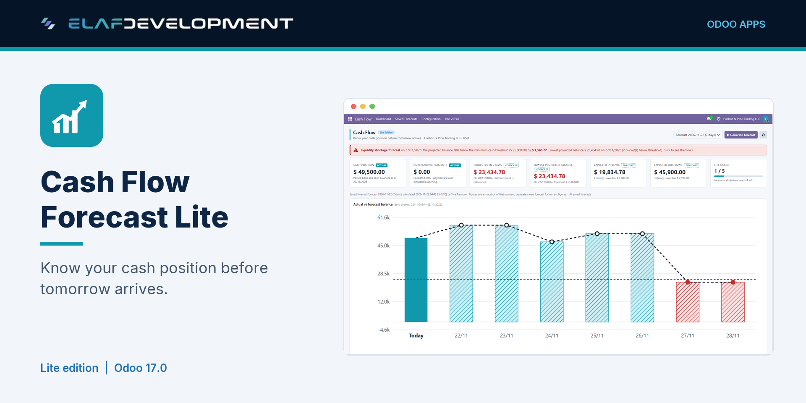
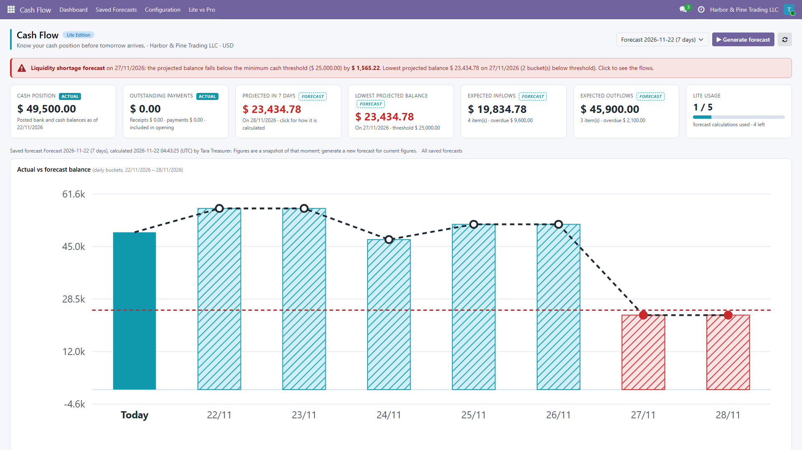
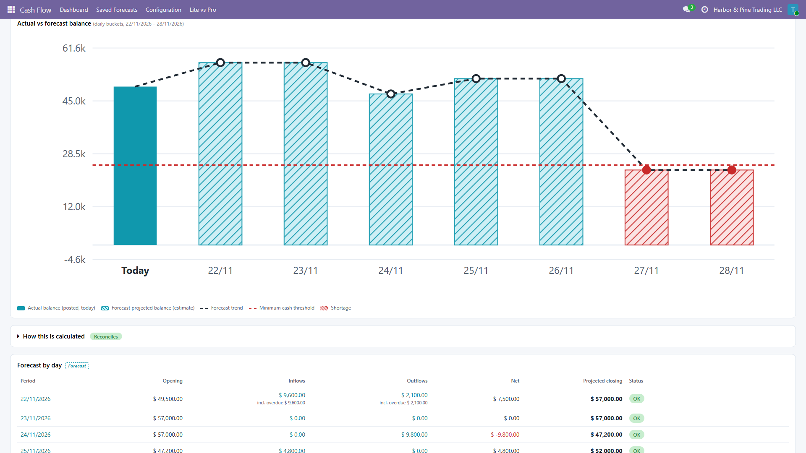
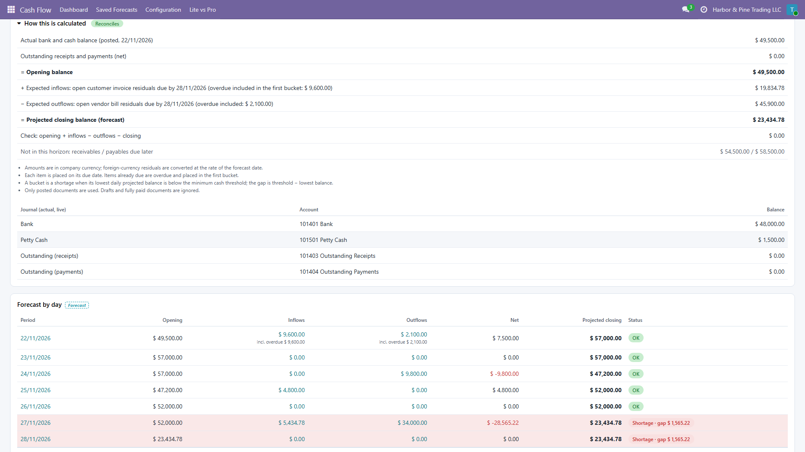
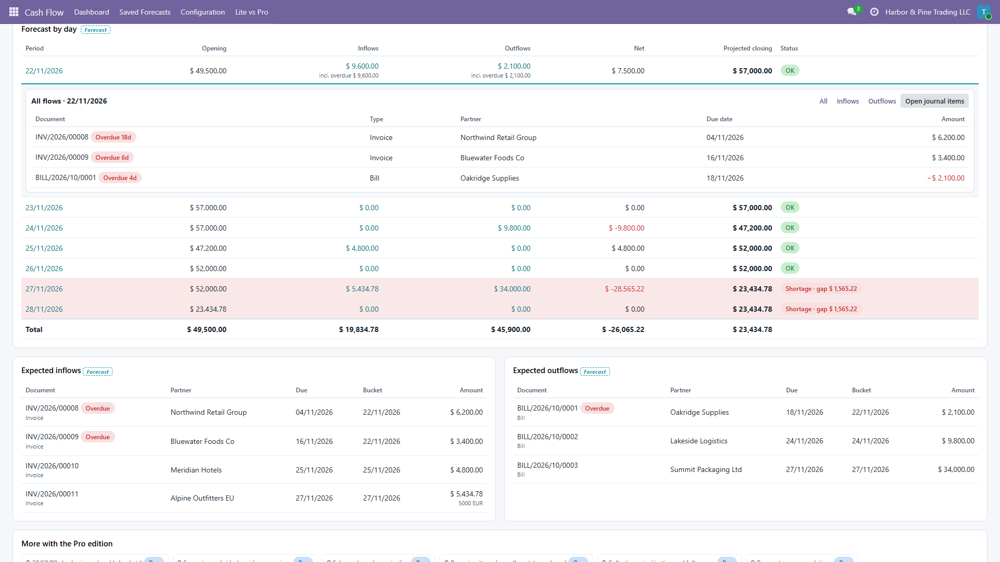
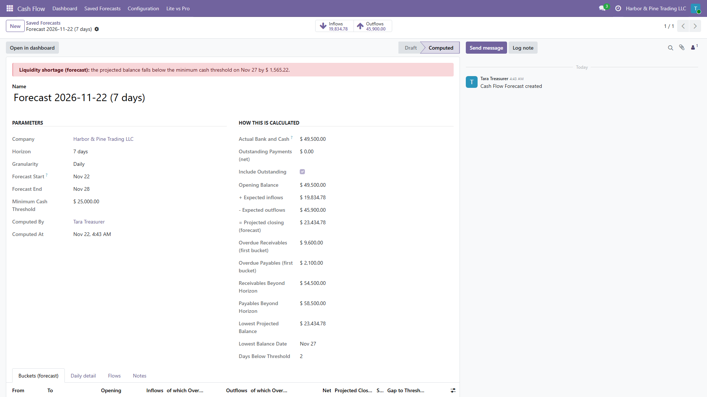
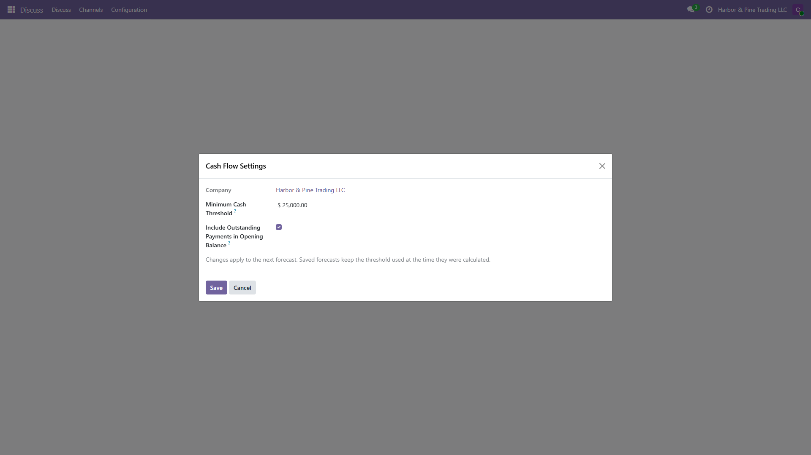
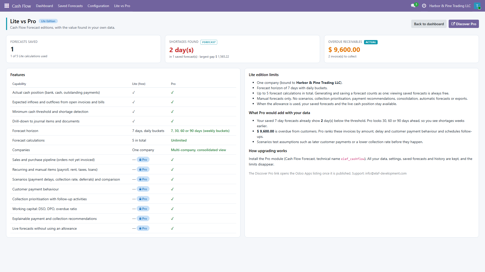

LITE EDITION
See your actual cash position and a 7-day cash forecast from open customer invoices and vendor bills, with liquidity-shortage alerts and drill-down to every journal item.
Actual and forecast kept separate Every figure reconciles Drill-down to journal items English and Arabic1
Posted balances of your bank and cash journals, with outstanding receipts and payments shown separately.
2
Daily inflows and outflows from open invoices and bills by due date, with overdue items flagged.
3
Set a minimum cash threshold and see the first day the projected balance falls below it, and by how much.

Dashboard: actual cash, 7-day projection, lowest balance and shortage alert
Posted balances, dated today or earlier, of the default accounts of your bank and cash journals, per journal. Outstanding receipts and payments are shown separately; including them in the opening balance is a setting.
Daily buckets from posted, unreconciled receivables and payables by due date, including credit notes and unmatched payments. Foreign-currency items are converted once, at today's rate. Partial payments and credit notes reduce the open amount, so each amount is counted once, and the total is checked against an independent database sum.
Days whose projected balance is below your minimum cash threshold are flagged, with the first shortage date, its gap, the largest gap and the lowest projected balance.
Key figures and every day open the journal items or documents behind them.
Actual figures and forecast figures carry different labels and styles; the chart shows an actual bar, a forecast line and the threshold line with a legend.
A panel shows opening + inflows - outflows = closing, the reconciliation check, the amounts beyond the horizon and the journal balances used.
Each calculation is saved with its daily buckets and flows. Results cannot be edited; saved forecasts stay viewable.
Items already past due are placed in the first day and flagged as overdue with their days overdue.
This free edition is fully functional within the limits below. Please review them before installing.

Actual bar and forecast line with the minimum cash threshold

Opening + inflows - outflows = closing, with the reconciliation check

Drill-down from a day to the invoices and bills behind it

Saved forecast with daily buckets and stored flows

Minimum cash threshold and opening balance option

Lite vs Pro page with the Lite forecast counter
Before paying vendors, check whether the balance stays above the minimum for the coming 7 days.
See the overdue receivables that weigh on the first day of the forecast and open them directly.
| Capability | Lite (free) | Pro |
|---|---|---|
| Actual cash position and shortage detection | ✓ | ✓ |
| Drill-down and calculation panel | ✓ | ✓ |
| Scenarios with side-by-side comparison | — | ✓ |
| Customer payment behaviour and collection priorities | — | ✓ |
| Working capital (DSO, DPO, overdue ratio) | — | ✓ |
| Rule-based recommendations with their records | — | ✓ |
| Companies | One company per database (the first company that saves a forecast) | Multi-company, with a consolidated view |
| Forecast horizon | 7 days, daily buckets | 7, 30, 60 or 90 days |
| Forecast calculations | Up to 5 forecast calculations in total (generating and saving a forecast counts as one; viewing saved forecasts is always available; deleting forecasts does not give calculations back) | No cap |
| Forecast sources | Open invoices and bills only; manual calculation only | Adds confirmed sales and purchase orders and recurring items, plus a live forecast view |
A Pro edition is available. It is installed on top of Lite and keeps all Lite data, settings and history.
| Supported Odoo versions | 19.0 |
|---|---|
| Other Odoo versions | Odoo 17.0 and 18.0 are distributed as separate packages. |
| Community / Enterprise | Odoo 19.0 Community Edition (tested). Enterprise Edition has not been tested. |
| Hosting | On-premise and Odoo.sh. Not available on Odoo Online, which does not run third-party Python modules. |
| Dependencies | Invoicing, Discuss |
| License | LGPL-3 |
Not in Lite. Lite uses posted, unpaid invoices, bills, credit notes and unmatched payments. Orders are a Pro source.
No. It is a projection based on due dates; customers may pay late and new documents will appear. Actual and forecast figures are always labelled.
Saved forecasts stay viewable. Generating a new forecast is blocked with a clear message, and the dashboard button opens the Lite vs Pro page.
The user and administrator guide is available in the Documentation tab of this listing.
Community support, best effort. Contact: info@elaf-development.com
Cash Flow Forecast Lite 19.0.1.0.0, released 2026-11-22
Initial release for Odoo 19.0.